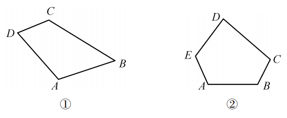
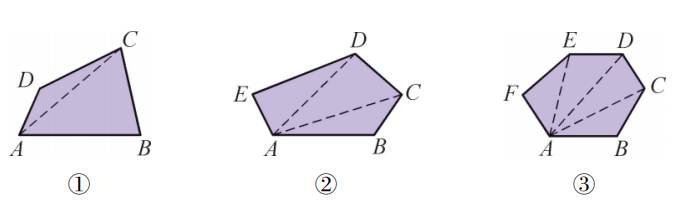
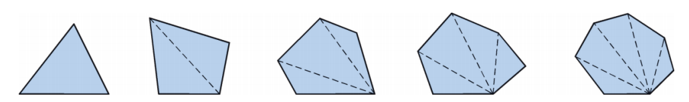
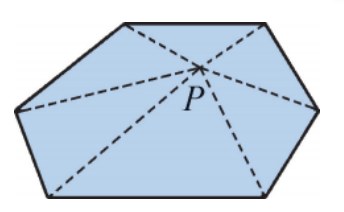
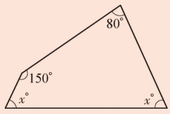
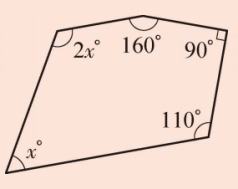

我们已经知道三角形的内角和等于180°。那么四边形、五边形……的内角和是多少度呢？它们与三角形的内角和有什么关系？今天我们将探索多边形的内角和。

我们已经知道什么叫做三角形（三边形）。你能说出什么叫做四边形、五边形吗？
四边形：由四条不在同一直线上的线段首尾顺次连结组成的平面图形。
五边形：由五条不在同一直线上的线段首尾顺次连结组成的平面图形。
一般地，由 $n$ 条不在同一直线上的线段首尾顺次连结组成的平面图形称为 $n$ 边形（多边形）。
注意：我们目前研究的是凸多边形（如图8.2.1所示）。
多边形的对角线：连结多边形不相邻的两个顶点的线段叫做多边形的对角线。如图8.2.3，$AC$ 是四边形的一条对角线。

从多边形的一个顶点出发，可以画出几条对角线？它们将多边形分成几个三角形？完成下表。
| 多边形的边数 | 3 | 4 | 5 | 6 | 7 | … | $n$ |
|---|---|---|---|---|---|---|---|
| 分成的三角形个数 | 1 | … | |||||
| 多边形的内角和 | 180° | … |
| 多边形的边数 | 3 | 4 | 5 | 6 | 7 | … | $n$ |
|---|---|---|---|---|---|---|---|
| 分成的三角形个数 | 1 | 2 | 3 | 4 | 5 | … | $n-2$ |
| 多边形的内角和 | 180° | 360° | 540° | 720° | 900° | … | $(n-2)\cdot180°$ |
由此可得：$n$ 边形的内角和为 $(n-2)\cdot180°$。

“归纳推理”是数学中的一种推理方式，体现了从特殊到一般的推理过程。我们通过对三边形、四边形、五边形等的探索，发现它们的内角和与边数之间存在某种逻辑关系，从而归纳出多边形的内角和公式。这种归纳推理的方式，我们今后还会经常用到。
解：八边形的内角和为
\[ (n-2)\cdot180° = (8-2)\times180° = 6\times180° = 1080°. \]解：设这个多边形的边数为 $n$，根据题意，得
\[ (n-2)\cdot180° = 2160°. \] \[ n-2 = \frac{2160°}{180°} = 12, \quad n = 14. \]因此，这个多边形的边数为14。
如图8.2.5，在 $n$ 边形内任取一点 $P$，连结点 $P$ 与多边形的每一个顶点，可得到几个三角形？你能否根据这样划分多边形的方法来说明 $n$ 边形的内角和等于 $(n-2)\cdot180°$？

可以得到 $n$ 个三角形，它们内角总和为 $n\cdot180°$，减去以 $P$ 为顶点的周角 $360°$，即得多边形内角和 $n\cdot180°-360° = (n-2)\cdot180°$。
1. 求下列图形中 $x$ 的值。


① $x = 65°$；② $x = 60°$。
2. 已知一个多边形的内角和等于1440°，求这个多边形的边数。
解：$(n-2)\cdot180° = 1440°$，$n-2 = 8$，$n = 10$。所以是十边形。
转化思想： 将多边形内角和转化为三角形内角和问题。
归纳推理： 从特殊到一般得出公式。
数形结合： 利用图形直观理解分割方法。
✨ 多边形内角和，转化三角形 ✨